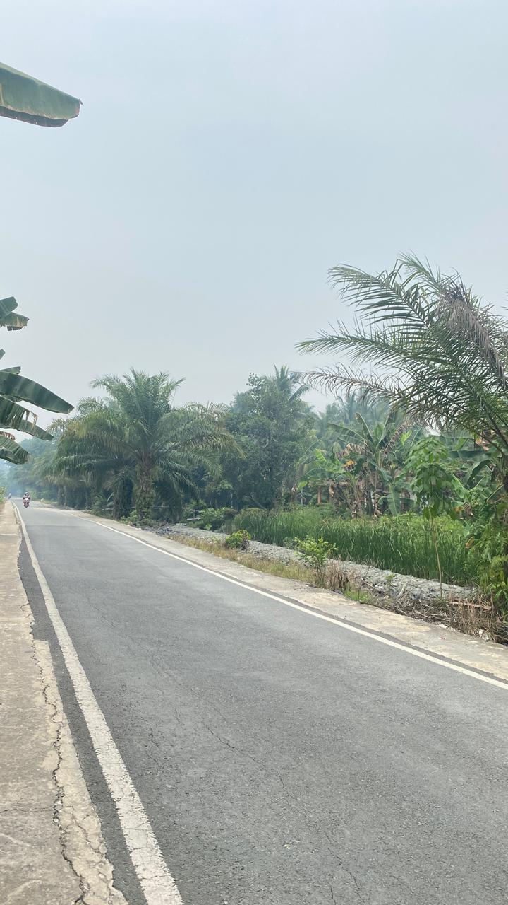
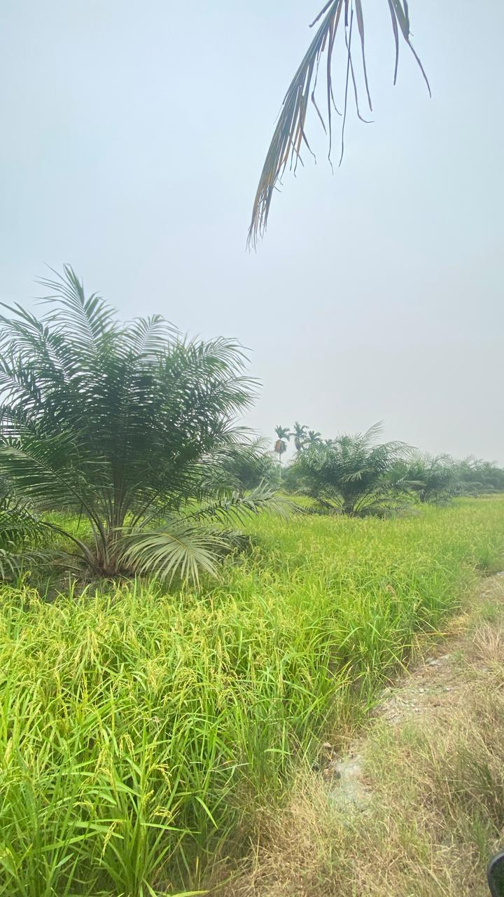
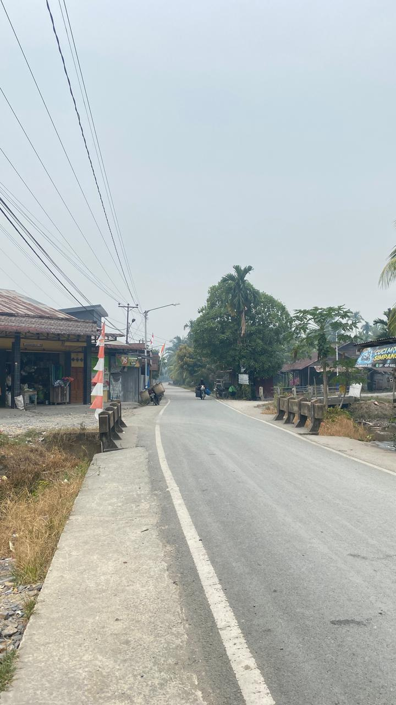
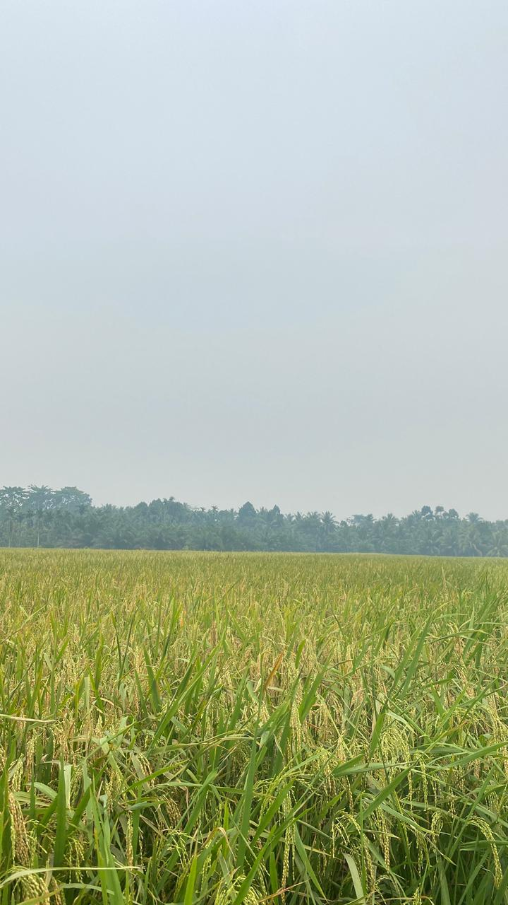

GALERI DESA
Keindahan Desa Serindang

Keindahan Alam

Pemandangan Desa

Suasana Desa

Lingkungan Desa

Kegiatan Desa
Mengenal keindahan, potensi, dan kehidupan masyarakat Desa Serindang.
Jelajahi DesaTENTANG DESA
Desa Serindang merupakan salah satu desa yang berada di Kecamatan Tebas, Kabupaten Sambas, Kalimantan Barat. Desa ini memiliki lingkungan yang asri serta kehidupan masyarakat yang menjadi bagian penting dalam perkembangan desa.
Dengan kondisi wilayah yang memiliki potensi alam dan lahan yang dapat dimanfaatkan oleh masyarakat, Desa Serindang memiliki berbagai potensi yang dapat terus dikembangkan. Potensi tersebut dapat mendukung kegiatan masyarakat sekaligus meningkatkan perekonomian desa.
Selain potensi alam, kehidupan masyarakat Desa Serindang juga menjadi bagian dari identitas desa. Berbagai kegiatan dan aktivitas sehari-hari masyarakat mencerminkan kehidupan pedesaan yang sederhana, nyaman, dan penuh kebersamaan.
Melalui pengembangan potensi desa dan pemanfaatan sumber daya yang ada secara baik, Desa Serindang diharapkan dapat terus berkembang serta memberikan manfaat bagi masyarakat dan lingkungan sekitar.
Kecamatan Tebas
Kabupaten Sambas
Kalimantan Barat
Luas Wilayah: 10,02 km²
Kode Pos: 79461
POTENSI DESA
Pertanian menjadi salah satu potensi yang mendukung kehidupan dan perekonomian masyarakat Desa Serindang.
Potensi perikanan dapat dikembangkan sebagai salah satu sumber ekonomi masyarakat desa.
Lingkungan alam Desa Serindang memiliki potensi yang dapat dimanfaatkan dan dikembangkan.
GALERI DESA

Keindahan Alam

Pemandangan Desa

Suasana Desa

Lingkungan Desa
Kegiatan Desa
LOKASI DESA
Kecamatan Tebas,
Kabupaten Sambas,
Kalimantan Barat
Desa Serindang berada di wilayah Kecamatan Tebas, Kabupaten Sambas, Kalimantan Barat.
Lihat di Google MapsSampaikan kritik, saran, atau aduan mengenai Desa Serindang.